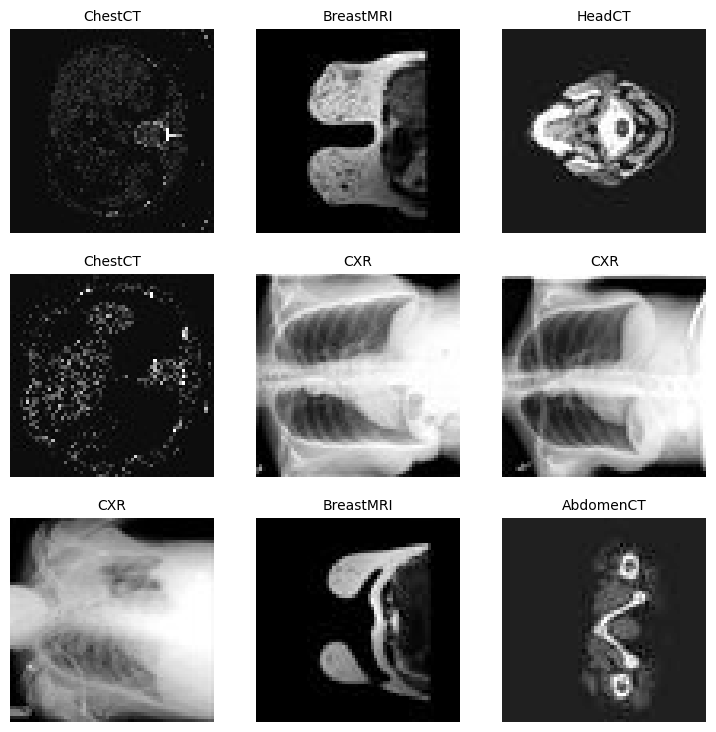
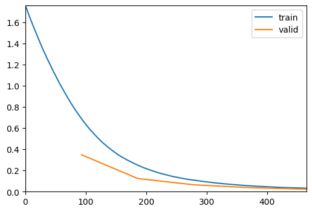
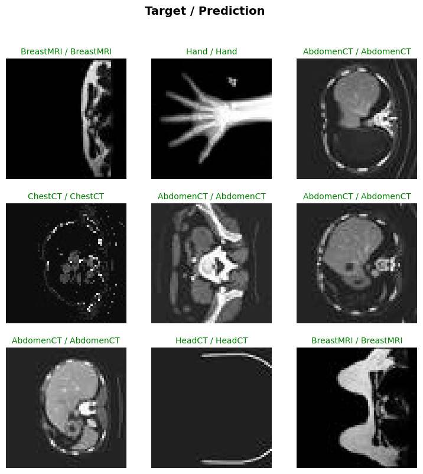
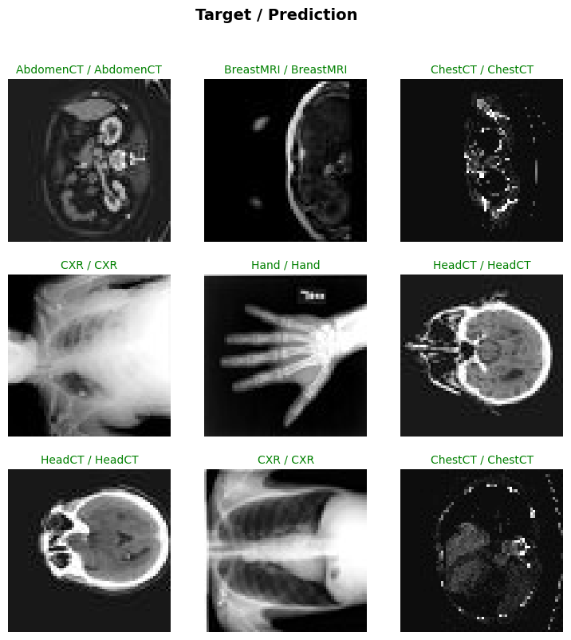
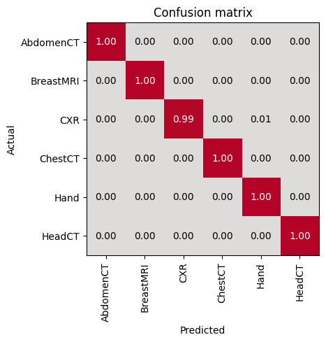
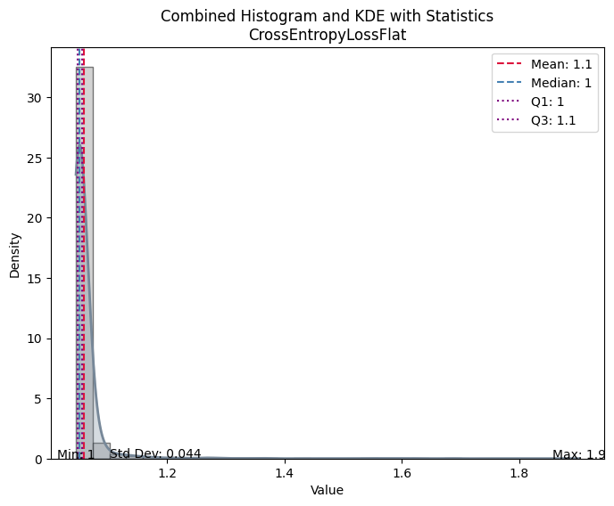
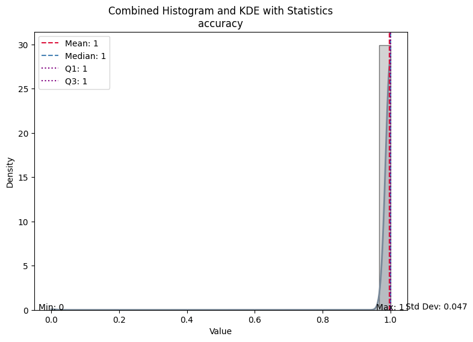

import os
import tempfile
from bioMONAI.data import *
from bioMONAI.core import *
from bioMONAI.metrics import accuracy
from bioMONAI.losses import CrossEntropyLossFlat
from monai.networks.nets import DenseNet121
from monai.apps import MedNISTDatasetMONAI 101 tutorial - bioMONAI
Setup imports
Setup data directory
You can specify a directory.
This allows you to save results and reuse downloads.
If not specified a temporary directory will be used.
base_directory = '../_data/'
if base_directory is not None:
os.makedirs(base_directory, exist_ok=True)
root_dir = tempfile.mkdtemp() if base_directory is None else base_directory
print(root_dir)../_data/Use MONAI transforms to preprocess data
Medical images require specialized methods for I/O, preprocessing, and augmentation. They often follow specific formats, are handled with specific protocols, and the data arrays are often high-dimensional.
In this example, we will perform image loading, data format verification, and intensity scaling with three monai.transforms listed below, and compose a pipeline ready to be used in next steps.
from monai.transforms import LoadImageD, EnsureChannelFirstD, ScaleIntensityD, Compose
transform = Compose(
[
LoadImageD(keys="image", image_only=True),
EnsureChannelFirstD(keys="image"),
ScaleIntensityD(keys="image"),
]
)Prepare datasets using MONAI Apps
We use MedNISTDataset in MONAI Apps to download a dataset to the specified directory and perform the pre-processing steps in the monai.transforms compose.
The MedNIST dataset was gathered from several sets from TCIA, the RSNA Bone Age Challenge, and the NIH Chest X-ray dataset.
The dataset is kindly made available by Dr. Bradley J. Erickson M.D., Ph.D. (Department of Radiology, Mayo Clinic) under the Creative Commons CC BY-SA 4.0 license.
If you use the MedNIST dataset, please acknowledge the source.
train_ds = MedNISTDataset(root_dir=root_dir, transform=transform, section="training", download=False)
val_ds = MedNISTDataset(root_dir=root_dir, transform=transform, section="validation", download=False)
test_ds = MedNISTDataset(root_dir=root_dir, transform=transform, section="test", download=False)Loading dataset: 100%|██████████| 47164/47164 [00:28<00:00, 1632.66it/s]
Loading dataset: 100%|██████████| 5895/5895 [00:03<00:00, 1545.11it/s]
Loading dataset: 100%|██████████| 5895/5895 [00:03<00:00, 1692.22it/s]data_ops = {
'x_keys': 'image',
'y_keys': 'label',
'bs': 512,
'shuffle': True,
'vocab': ['AbdomenCT','BreastMRI','ChestCT','CXR','Hand','HeadCT'],
'show_summary': True,
}
data = BioDataLoaders.from_monai(train_ds, val_ds, **data_ops)
Train DataLoader
----------------
Dataset size : 47164
Batch size : 512
Batches : 93
Classes : ['AbdomenCT', 'BreastMRI', 'ChestCT', 'CXR', 'Hand', 'HeadCT']
Batch structure:
[0] shape=(512, 1, 64, 64) dtype=torch.float32 ~8.00 MB
[1] shape=(512,) dtype=torch.int64 ~0.00 MB
Approx batch memory: 8.00 MB
Valid DataLoader
----------------
Dataset size : 5895
Batch size : 1024
Batches : 6
Classes : ['AbdomenCT', 'BreastMRI', 'ChestCT', 'CXR', 'Hand', 'HeadCT']
Batch structure:
[0] shape=(1024, 1, 64, 64) dtype=torch.float32 ~16.00 MB
[1] shape=(1024,) dtype=torch.int64 ~0.01 MB
Approx batch memory: 16.01 MBdata.show_batch()
Define a network and a supervised trainer
To train a model that can perform the classification task, we will use the DenseNet-121 which is known for its performance on the ImageNet dataset.
For a typical supervised training workflow, MONAI provides SupervisedTrainer to define the hyper-parameters.
import torch
torch.cuda.empty_cache()
torch.cuda.reset_peak_memory_stats()max_epochs = 5
model = DenseNet121(spatial_dims=2, in_channels=1, out_channels=6)
loss_function = CrossEntropyLossFlat()
metrics = [accuracy]
trainer = fastTrainer(data, model, loss_fn=loss_function, metrics=metrics, show_summary=False, lr=1e-5)Run the training
trainer.fit(max_epochs)| epoch | train_loss | valid_loss | accuracy | time |
|---|---|---|---|---|
| 0 | 0.697999 | 0.348656 | 0.969126 | 00:12 |
| 1 | 0.252962 | 0.123788 | 0.986768 | 00:12 |
| 2 | 0.109565 | 0.064564 | 0.990331 | 00:12 |
| 3 | 0.055369 | 0.037543 | 0.994402 | 00:11 |
| 4 | 0.032297 | 0.023173 | 0.997286 | 00:11 |

torch.cuda.max_memory_allocated() / 1024**25405.203125trainer.show_results()
Check the prediction on the test dataset
test_dl = test_biodataloader(data, test_ds) # type:ignoreevaluate_classification_model(trainer, test_data=test_dl, metrics=accuracy, show_graph=True, show_results=True); # type:ignore precision recall f1-score support
AbdomenCT 0.99 1.00 1.00 993
BreastMRI 1.00 1.00 1.00 903
CXR 1.00 0.99 1.00 968
ChestCT 1.00 1.00 1.00 998
Hand 0.99 1.00 1.00 996
HeadCT 1.00 1.00 1.00 1037
accuracy 1.00 5895
macro avg 1.00 1.00 1.00 5895
weighted avg 1.00 1.00 1.00 5895
Most Confused Classes:| Actual Class | Predicted Class | Count | |
|---|---|---|---|
| 0 | CXR | Hand | 5 |
| 1 | HeadCT | AbdomenCT | 3 |
| 2 | BreastMRI | AbdomenCT | 2 |
| 3 | ChestCT | AbdomenCT | 1 |
| 4 | Hand | CXR | 1 |
| 5 | Hand | HeadCT | 1 |



| Value | |
|---|---|
| CrossEntropyLossFlat | |
| Mean | 1.057990 |
| Median | 1.049570 |
| Standard Deviation | 0.044332 |
| Min | 1.044239 |
| Max | 1.902058 |
| Q1 | 1.047402 |
| Q3 | 1.054644 |

| Value | |
|---|---|
| accuracy | |
| Mean | 0.997795 |
| Median | 1.000000 |
| Standard Deviation | 0.046908 |
| Min | 0.000000 |
| Max | 1.000000 |
| Q1 | 1.000000 |
| Q3 | 1.000000 |